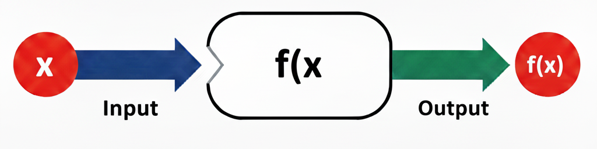
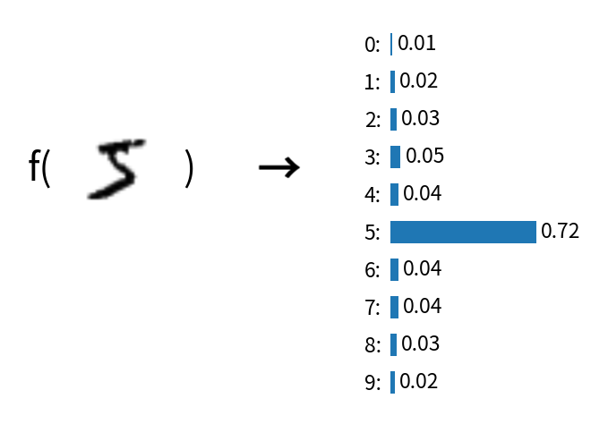
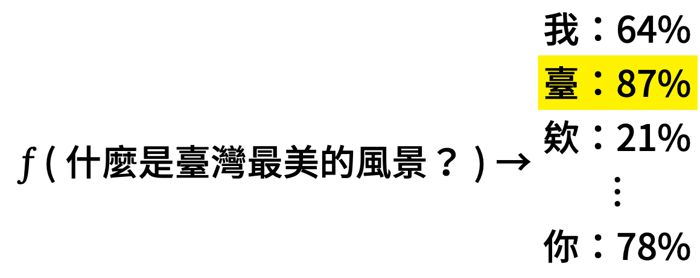

和 AI 作朋友——高中生的 AI 工具箱
雲林場高中生 AI 工作坊
Table of Contents
1. 今天要做什麼？
用 AI 工具，從零開始完成一份台灣史小論文。
主題：*為什麼日本人選雲林蓋糖廠？*
| 步驟 | 用什麼工具 | 你會得到什麼 |
|---|---|---|
| 1 | NotebookLM | 研究筆記（含出處） |
| 2 | Napkin | 因果關係圖 |
| 3 | Claude（claude.ai） | 小論文 Word 檔（初稿） |
| 4 | ChatGPT | 改好的反思段落，貼回 Word |
| 5 | Gamma 或 Claude | 報告簡報 |
每一步的產出直接餵進下一步，最後你手上會有：一份 Word + 一份簡報。
2. 想不到題目？從這裡挑一個
老師示範的是「為什麼是雲林？」，你也可以選自己有興趣的：
| 編號 | 題目 | 建議素材 |
|---|---|---|
| 1 | 虎尾糖廠的冰為什麼特別好吃？——從一支冰棒認識糖廠還在做什麼 | 13, 3, 10 |
| 2 | 阿公阿嬤口中的「糖廠」是什麼樣子？——家族記憶裡的糖廠生活 | 4, 6, 10 |
| 3 | 那條鐵軌為什麼還在？——五分車從載甘蔗到載觀光客的故事 | 12, 2, 6 |
| 4 | 為什麼虎尾以前叫「糖都」？——一個小鎮怎麼變成全台最重要的糖廠 | 2, 4 |
| 5 | 日本人為什麼來雲林種甘蔗？——你家附近的田，一百年前可能是甘蔗園 | 4, 1, 11 |
| 6 | 糖廠旁邊那些舊房子該拆掉嗎？——老建築保存 vs. 蓋新東西的兩難 | 12, 11 |
| 7 | 一顆方糖的旅程——從田裡的甘蔗到你桌上的糖，中間經過什麼？ | 4, 5, 13 |
| 8 | 糖廠關了，然後呢？——虎尾糖廠現在變成什麼樣子 | 13, 12, 10 |
建議素材欄的編號對應底下的素材清單。也歡迎自己想題目！
3. Step 1：NotebookLM——讀懂素材
打開 NotebookLM（用 Google 帳號登入），上傳素材（見底下素材清單），然後問問題。
3.1. 可以問的問題（參考）
- 「根據這些資料，日本人為什麼選擇在雲林虎尾設立糖廠？」
- 「戊戌大水災跟糖廠設立的關係是什麼？請引用原文。」
- 「虎尾糖廠跟橋頭糖廠比起來，設廠條件有什麼不同？」
- 「如果我要寫一篇小論文，題目是『為什麼是雲林？』，大綱可以怎麼寫？」
3.2. 最後一步：請 NotebookLM 幫你打包
問完所有問題之後，貼這段指令，讓它把零碎的回答整合成一份研究筆記：
請把我們剛才所有對話的內容整合成一份「研究筆記」，格式如下：
一、研究問題：（你的題目） 二、關鍵發現：列出所有重要事實，每一點後面標明出處（來源文件名稱），例如：「1897 年戊戌大水災沖出大量溪埔地（出處：楊彥騏，〈近代產業——雲林糖業的興衰〉）」 三、比較分析：（如果有比較的話） 四、建議大綱：小論文的章節架構 五、參考資料清單：列出所有引用過的文件名稱與作者
→ 複製這份研究筆記，Step 3 會用到。
4. Step 2：Napkin——畫一張圖
打開 Napkin，把你的研究重點貼進去，它會自動生成圖表。
例如貼這段：
日本選擇在雲林虎尾設立糖廠的原因：
- 天災創造機會：1897 戊戌大水災沖出大量溪埔地，成為無主地
- 自然條件適合：雲林平原日照充足、雨量適中
- 政策推動：1902 年台灣總督府頒布糖業獎勵規則
- 企業家眼光：鈴木藤三郎看中虎尾的潛力，1906 年設廠
- 國家需求：日俄戰爭後，日本需要糖的自給自足
→ 產出的圖可以放進小論文或簡報裡。
5. Step 3：Claude——生成小論文 Word 檔
打開 claude.ai（免費帳號即可），按照以下順序貼：
- 先貼 小論文格式規範 （見底下附錄，整段複製）
- 再貼 Step 1 的研究筆記
- 最後貼以下指令：
請根據上面的格式規範和素材，整理成一份小論文，輸出為 Word 檔（.docx）。
基本資訊：
- 投稿類別：史地類
- 篇名：（你的題目）
- 作者：（你的姓名。學校。年級）
- 指導老師：（填你的老師）
請遵守格式規範，並根據素材中的出處自動生成「肆、引註資料」段落。反思段落請用高中生的口吻寫。
→ Claude 會生成一個可以下載的 Word 檔，點「下載」就拿到。
5.1. 下載後一定要做的事
- 打開 Word，把 AI 的用詞換成你自己的口吻
- 檢查人名、年份有沒有被 AI 改掉或編出來
- 反思段落先留著，下一步會改
6. Step 4：ChatGPT——用 AI 當教練改反思
打開 ChatGPT，把 Word 裡的反思段落貼進去，用 AI 當教練修改。
6.1. 怎麼問才不會得到罐頭回答？
爛 prompt（不要這樣問）：
幫我寫一段學習歷程反思
好 prompt（這樣問）：
我住雲林，常經過虎尾糖廠，以前只覺得是一個老地方。這次研究之後才知道，原來日本人選雲林蓋糖廠不是巧合，是因為一場水災沖出了大片空地。幫我用這個「從不在意到覺得驚訝」的轉變，寫一段反思初稿。風格要像高中生自己寫的，不要太文言，300字以內。
6.2. 接著用 AI 改，不是用 AI 寫
拿到初稿後，繼續問：
- 「這段反思沒有連結到我的研究問題，幫我指出哪裡可以改。」
- 「給我三種不同角度：我學到了什麼 / 我對家鄉的看法改變了什麼 / 我還想探索什麼」
- 「這句話怎麼改更有力？」
至少來回三輪，改到你滿意為止。改好後貼回 Word 檔，取代原本 AI 寫的罐頭反思。
7. Step 5：Gamma——做簡報
8. AI 到底怎麼辦到的？
8.1. AI 的本質是「函數」
你在國中數學學過函數：輸入一個值，經過某個規則，得到一個輸出。
華氏溫度 = 1.8 × 攝氏溫度 + 32
AI 做的事情其實一模一樣，只是函數複雜得多：
| 任務 | 輸入 | → f → | 輸出 |
|---|---|---|---|
| 手寫辨識 | 一張圖片 | → f → | 0~9 各數字的機率 |
| 貓狗辨識 | 一張照片 | → f → | 貓 90%、狗 10% |
| 文字生成 | 一段提示詞 | → f → | 生成的文字 |
| 影像生成 | 一段描述 | → f → | 生成的圖片 |
不管 AI 看起來多厲害，骨子裡都是：*輸入 → 函數 → 輸出*。


差別只在於函數裡面有幾千億個參數（GPT-4 有超過一兆個），這些參數是從海量資料中「學」出來的。
8.2. 生成式 AI 是「會接龍的函數」
既然 AI 是函數，那生成式 AI 是什麼樣的函數？
答案：*一個每次只猜下一個字的函數，不斷把自己的輸出接回輸入，像接龍一樣。*
 git
以「什麼是臺灣最美的風景？」為例：
git
以「什麼是臺灣最美的風景？」為例：


f("什麼是臺灣最美的風景？") → 臺（機率最高）
f("什麼是臺灣最美的風景？臺") → 灣
f("什麼是臺灣最美的風景？臺灣") → 最
f("什麼是臺灣最美的風景？臺灣最") → 美
……
f("什麼是臺灣最美的風景？臺灣最美的風景是") → 人
就像你在 LINE 上打字，鍵盤會自動建議下一個字——AI 做的是同一件事，只是它猜得非常非常準。
但它不是每次都選機率最高的字——像轉輪盤一樣，機率高的字比較容易被選中，但不是一定：

AI 會加入一點隨機性（叫做「溫度參數」），讓回答更多樣。這也是為什麼你問同一個問題兩次，可能會得到不同的答案。
8.3. Token：AI 眼中的世界
AI 看到的不是文字，而是 Token（一小段一小段的碎片）。
打開 OpenAI Tokenizer 試試看：
- 輸入「虎尾糖廠」，看它被切成幾個 token
- 再輸入「314159」，你會發現數字的切法跟你想的完全不一樣
- 這就是為什麼 AI 有時候數學會算錯——它看到的不是「數字」，是碎片
8.4. AI 怎麼被訓練出來的？
| 階段 | 做了什麼 | 學會什麼 |
|---|---|---|
| 1 | 讀了整個網路的文字 | 語言的模式和規律 |
| 2 | 針對特定任務練習（Fine-tuning） | 怎麼當助理 |
| 3 | 人類告訴它什麼是好答案（RLHF） | 怎麼避免有害回應 |
8.5. 幻覺（Hallucination）——AI 也會騙你
AI 有時候會一本正經地「編故事」，講得頭頭是道，但整段都是假的。這叫「幻覺」。
8.5.1. 實驗：用同一個問題去測四個 AI
8.5.2. 觀察重點
看看四個 AI 的回答：
- 有沒有講出具體的人名、日期、地點？
- 四個 AI 講的是同一件事嗎？還是各說各話？
- 有沒有 AI 承認「我不確定」或「找不到相關資料」？
- 把它們的回答拿去跟 NotebookLM 裡的素材比對——有哪些是真的、哪些是編的？
8.5.3. 結論
- AI 不是知識庫，是語言模型——它擅長的是「組織語言」，不是「記住事實」
- 四個 AI 可能給你四個不同版本的「歷史」，但真正的歷史只有一個
- *寫學習歷程的警告*：大學教授一年看幾千份，你掰的他看得出來
- 所以才需要 NotebookLM——有餵資料、有出處的回答，才值得信任
8.6. 什麼東西不該丟給 AI？
AI 很強，但你打進去的每一個字，都會離開你的電腦。
要小心的東西：
- 日記、心情筆記、感情問題、家裡狀況
- 同學的個資、輔導紀錄
- 還沒公開的競賽作品、原創小說
一個判準：*「這段話如果被截圖貼到網路上，我會崩潰嗎？」* 會 → 別丟雲端。
9. 你現在手上有什麼？
| 成品 | 來自哪一步 |
|---|---|
| 研究筆記（含出處） | Step 1 |
| 因果關係圖 | Step 2 |
| 小論文 Word 檔（含反思定稿） | Step 3 + 4 |
| 報告簡報 | Step 5 |
10. 三個帶走的觀念
- AI 幫你加速，不是幫你代寫 ——最後掛名的是你
- 你給 AI 多少「你的樣子」，它就回給你多少「你的樣子」 ——好的 prompt 比好的工具重要
- 一定要自己檢查 ——AI 會編造事實，四個 AI 可能給你四個版本的「歷史」
11. 素材清單——上傳到 NotebookLM
點開連結 → 瀏覽器按 Ctrl+P （Mac 按 ⌘+P ）→ 「儲存為 PDF」→ 上傳到 NotebookLM。
11.1. 主要素材（建議都上傳）
- 臺灣糖業史——維基百科（列印存 PDF）
- 臺灣「糖都」之父——虎尾糖廠（列印存 PDF）
- 虎尾糖廠製糖工場——台糖官網（列印存 PDF）
- 近代產業——雲林糖業的興衰（楊彥騏）（直接下載 PDF）
- 甜蜜蜜的時空之旅——臺灣糖業故事（台史博）（直接下載 PDF）
12. 附錄：小論文格式規範（整段複製，貼給 Claude）
格式說明原始 PDF：點此下載
【全國高級中等學校小論文寫作比賽格式說明】 壹、篇幅要求 小論文篇幅以 A4 紙張 4-10 頁為限（不含封面）。 貳、版面要求 一、使用新細明體 12 級字打字，不可放大字型，單行間距，邊界上下左右各留 2 公分。 二、版面編排 （一）所有標題皆須單獨成行。 （二）標題與段落之間要空一行。 （三）段落與段落之間要空一行。 （四）段落開頭與一般中英文寫作相同。 三、頁首及首尾：每頁頁首需加入小論文篇名，頁尾插入頁碼。文字為 10 級字、置中。 參、格式說明 小論文之基本架構分為「封面頁」及四大段落：「壹、前言」、「貳、正文」、「參、結論」、「肆、引註資料」 一、封面頁 （一）單獨一頁、不編頁碼。 （二）含投稿類別、小論文篇名、作者及指導老師。 （三）不能有插圖。 （四）作者依「姓名。學校。部別/年級」之順序編排。 二、前言 為何選擇這個題目，透過什麼方法、運用什麼概念進行資料搜集，整篇文章的討論架構與範圍，以及想要達成的目的。 三、正文 （一）「正文」為小論文之主體所在。 （二）分層次、分段來條列說明。層次：一、→（一）→ 1、→（1） （三）強調相關資料的引用、彙整、分析、辯證。 （四）引用別人資料需加註來源，直接引用原文以粗體加「」標明，標註（作者，年代）。 （五）同一處引用原文不得超過 50 字。 （六）圖/表需有編號及標題。圖編號在下，表編號在上，需註明資料來源。圖不得超過頁面 1/4。 四、結論 研究過程中的思考、根據研究結果提出看法、未來值得進一步研究的方向。 五、引註資料 至少 3 篇，不得全部來自網站。